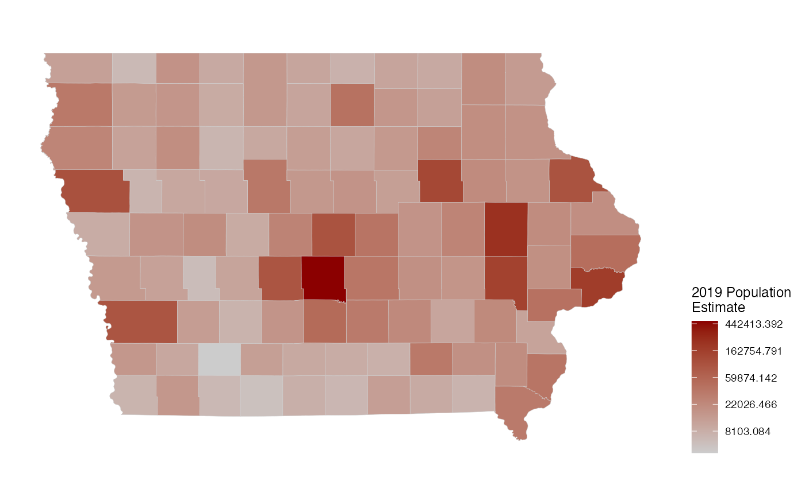

ia_counties.Rdprovenance - Chris, I need some help with how we document these exports.
ia_counties
A data frame with 99 rows and 9 variables:
county number
three-digit county fips code
square footage in acres
county acreage, same as `ACRES_SF``
five-digit fips code
county name (and it's `Obrien`)
two letter state abbreviation (`IA` all the way through)
identifier same as `CO_FIPS`
US Census Bureau count of 2010 county population.
US Census Bureau estimate of 2019 county population.
simple feature object of polygons
# county map of iowa in ggplot2 library(ggplot2) library(dplyr) # for the pipe ia_counties %>% ggplot() + geom_sf(aes(fill = popestimate2019), colour = "grey80", size = 0.1) + ggthemes::theme_map() + theme(legend.position="right") + scale_fill_gradient("2019 Population\nEstimate", trans="log", low = "grey80", high="darkred")